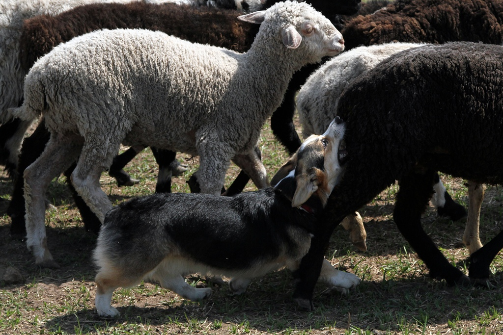
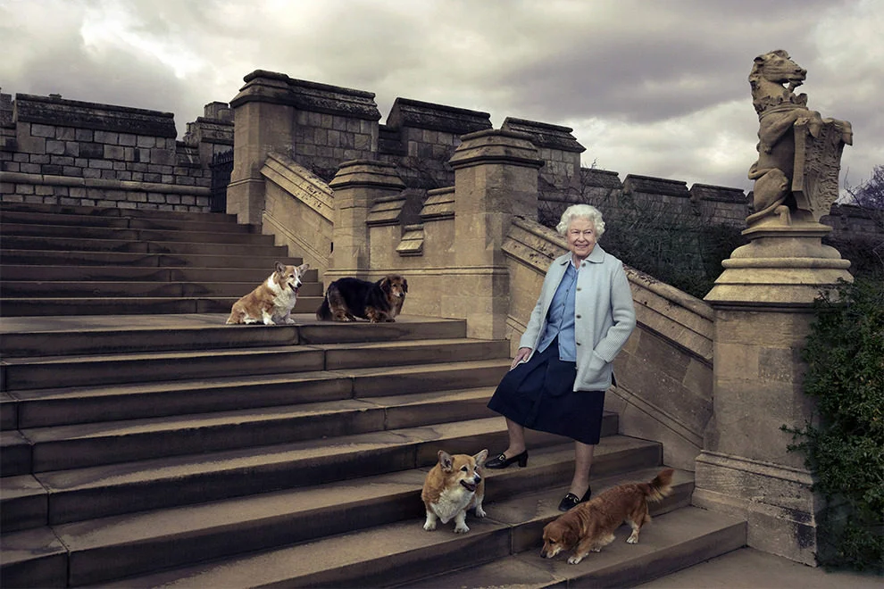
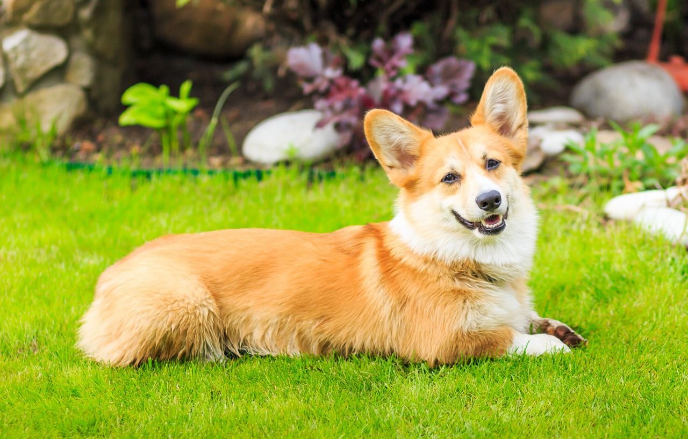
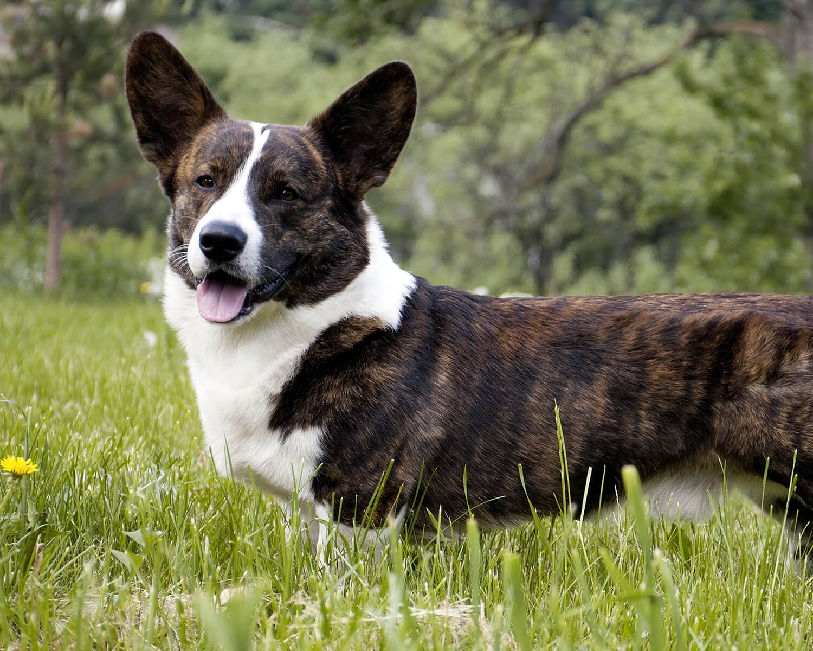

Происхождение
Эта порода повилась в Уэльсе, Великобритания. Там её использовали в качестве пастушьей собаки. Довольно широкое распростанение получила в XX веке, когда принимала участие в 1-ых выставках. Не смотря на свой маленький рост, эти собаки являются овчарками.

Легенды
Существует легенда о том, что корги людям подарили феи, у которых порода использовалась в качестве ездовых и поэтому у собак остались белые отметины на спинах.
Согласно другой легенде, щенков корги нашли дети и принесли домой.
Известность
Наибольшую известность собаки получили потому, что в 1933 году герцог Йоркский (будущий король Великобритании Георг VI) подарил щенков вельш-корги своим дочерям Элизабет (сейчас — Елизавета II) и Маргарет Роз.

Внешний вид
Вельш-корги - собаки на коротких лапах, с удлинённым телом и со стоячими ушами. Напоминают лис благодаря хвосту. А из-за обводки вокруг глаз и рта кажутся улыбающимися. Это небольшая собака ростом около тридцати сантиметров и массой тела до четырнадцати килограммов. Существуют два основных вида вельш-корги — пемброк и кардиган, которые довольно серьёзно различаются между собой.
Так, например, пемброк немного меньше, также у этих видов разная форма головы и строение грудных конечностей.
У пемброков рыже-белого окраса яркая, золотого окраса шерсть, белые отметины на мордочке, груди и лапках. Также пемброки бывают окраса черный триколор. Мордочка больше похожа на лисью. Из-за контрастной обводки пасти многим кажется, что пемброки «улыбаются». Глаза карие. Красивый крепкий корпус, крепкие короткие лапы с хорошо выраженными углами.

У кардигана лапы чуть длиннее, их отличает специфический постав передних конечностей, повторяющий форму грудной клетки, что делает их более маневренными в работе со скотом. Широкогрудые, с головой благородных очертаний и прямой, прочной спиной.

Многие считают, что пемброки отличаются от кардиганов отсутствием хвоста, однако это ошибка. Пемброки не всегда рождаются куцехвостыми, иногда хвосты купируют. С конца 1980-х годов, когда некоторые страны ввели запреты на купирование, всё больше появляется хвостатых пемброков, что делает их более похожими на лис.